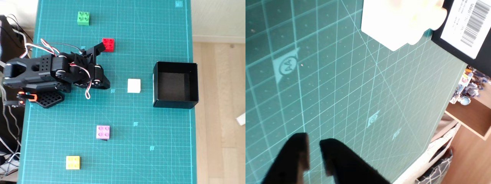
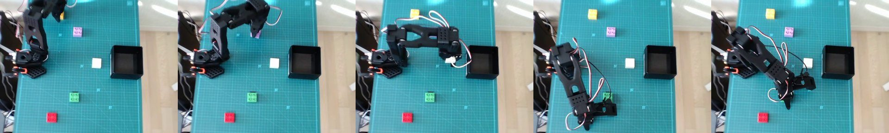
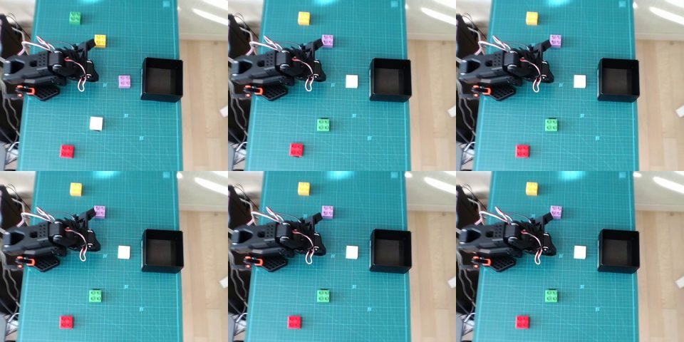
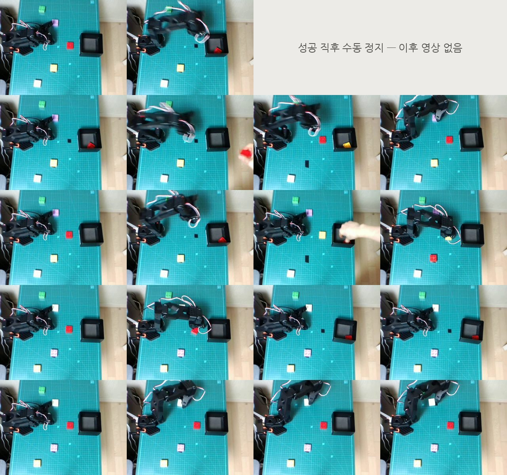
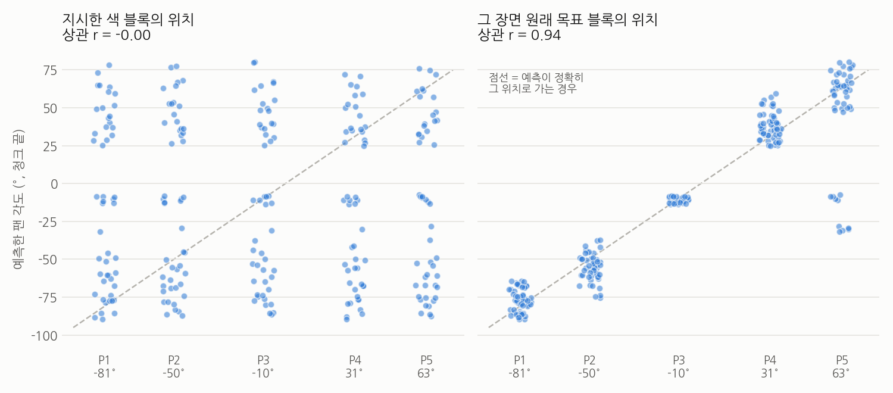
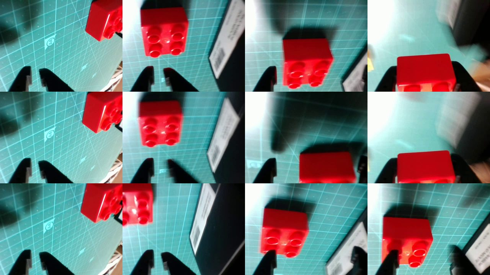

색깔 블록 실험: SmolVLA는 지시문을 보고 있을까
듀플로 블록 다섯 색을 늘어놓고 "빨간 블록을 상자에 넣어"처럼 색으로 목표를 지정했습니다. 색과 위치가 섞이지 않도록 데이터를 꽤 공들여 설계했는데, 학습된 모델은 지시문을 거의 쓰지 않았습니다. 그 결과와 원인을 좁혀 가는 과정을 정리한 노트입니다.
요약
- 5색 × 5위치를 라틴 방진으로 짠 75편의 시연을 모았습니다. 같은 배치에서 목표 색만 바꾼 시연이 5편씩 있어, 화면은 같고 지시문만 다른 구조입니다.
- SmolVLA를 미세조정해 실제 팔로 7회 돌렸더니, 지시한 색을 제대로 넣은 것은 1회(그것도 목표가 마침 정면 블록이었던 경우)였습니다. 정면 블록을 집어 넣은 것이 3회였습니다.
- 학습 데이터의 같은 장면에 지시문 색만 바꿔 넣는 시험에서, 예측 방향과 지시한 색 위치의 상관은 0.00이었습니다. 반대로 그 장면 원래 목표와의 상관은 0.94로, 모델은 지시문 대신 화면과 자세로 정답을 맞히고 있었습니다.
- 추론 단계에서 지시문 신호를 키우는 방법(CAG)은 효과가 없었습니다. 키울 연결 자체가 없었다는 뜻으로 읽힙니다.
- 원인 후보는 몇 가지로 좁혔지만, 아직 입증된 것과 가설을 구분해야 하는 단계입니다. 아래에 따로 정리했습니다.
목차
- 실험 환경
- 데이터셋 설계
- 수집 결과와 품질 점검
- 학습
- 실제 팔 결과
- 진단 ① 지시문 교체 시험
- 진단 ② 손목 카메라와 입력 구성
- 진단 ③ 지시문 가이던스(CAG)
- 입증된 것과 가설
- 관련 연구
- 다음 실험
- 참고문헌
실험 환경
| 로봇 | SO-ARM101 리더 + 팔로워 (Feetech STS3215 6개, 5 V 전원) |
|---|---|
| 카메라 | 위에서 내려다보는 TOP 카메라 + 손목 카메라, 둘 다 640×480 · 30 fps |
| 물체 | 듀플로 블록 약 3×3×2.5 cm, 다섯 색: 보라 빨강 노랑 흰색 초록 |
| 과제 | 지시문 Pick up the {색} block and place it in the box.에 맞는 블록을 집어 상자에 넣기 |
| 정책 | SmolVLA (약 4.5억 파라미터): SigLIP 비전 인코더 + SmolVLM2 언어 모델 16층 + flow matching 액션 전문가, 50스텝 청크 |
| 연산 | RTX 4060 Ti (8 GB) 한 장 |

데이터셋 설계
이 실험의 질문은 "모델이 색을 보고 움직이는가, 아니면 특정 위치나 순서를 외우는가"입니다. 그래서 색과 위치가 서로 섞이지 않도록 일정표를 먼저 만들고, 그 일정표대로 녹화했습니다.
| 설계 요소 | 내용 | 의도 |
|---|---|---|
| 위치 | 팔 앞 호 위의 다섯 자리 P1~P5 (어깨 팬 각도 기준 약 −81°, −50°, −10°, +31°, +63°) | 위치 효과를 따로 측정 |
| 배치 | 기본 순서 3종 × 순환 이동 5종 = 15개 배치 | 특정 색 순서를 외우지 못하게 |
| 라운드 | 한 라운드 = 5개 배치 × 목표 5개 = 25편, 5×5 라틴 방진이라 모든 색이 모든 위치에서 정확히 한 번씩 목표가 됨 | 색 × 위치 균형 |
| 같은 배치, 목표만 교체 | 한 배치를 놓은 채 목표 색만 바꿔 5편 연속 녹화 | 화면은 같고 지시문만 다른 반사실 쌍 |
| 규모 | 3라운드 = 75편 (색 × 위치 조합마다 3편) | — |
| 평가 배치 | 학습 15개 배치에 없는 순서 하나를 따로 남겨 둠 | 미관측 배치 일반화 |
| 지시문 기록 | 녹화 앱에 에피소드별 지시문 입력과 색 버튼을 추가해 녹화 때마다 자동 저장 | 라벨 오류 방지 |
녹화할 때는 배치 안내 페이지를 띄워 두고, 화살표로 다음 에피소드로 넘기며 보이는 대로 블록을 놓았습니다. 아래는 같은 배치에서 목표만 바꾼 다섯 편을, 팔이 블록에 다가가는 순간으로 맞춰 나란히 놓은 것입니다.

수집 결과와 품질 점검
녹화 직후 75편을 일정표와 하나씩 대조했습니다.
| 항목 | 결과 |
|---|---|
| 규모 | 75편 · 45,963프레임 · 평균 20.4초(16~30초) |
| 지시문 | 5종 모두 등록, 일정표와 불일치 0편 |
| 영상 | TOP·손목 모두 영상 길이와 프레임 수 일치 |
| 집기·놓기 | 75편 모두 블록을 쥔 구간이 있고 상자에서 놓음. 다시 잡기는 1편 |
| 위치 확인 | 집는 순간의 팬 각도가 위치별로 1~3° 이내에 모임 |
| 발견한 오류 | 배치 하나(5편)에서 빨강과 초록 블록이 일정표와 반대로 놓임 |
마지막 항목은 팬 각도에서 먼저 드러났습니다. 빨강을 집은 각도가 P4가 아니라 P5였고, 초록은 그 반대였습니다. TOP 영상 첫 프레임으로 확인한 뒤, 원본 일정표는 그대로 두고 실측 배치를 반영한 메타 파일을 따로 만들었습니다. 지시한 색을 집은 것은 맞아서 데이터는 유효하고, 위치 정보만 고쳤습니다. 그 결과 빨강·초록의 P4·P5 칸만 표본이 2편과 4편으로 갈렸습니다.

회차가 갈수록 에피소드가 짧아졌습니다(1라운드 22.8초 → 3라운드 18.5초). 숙련 효과로 보이며, 속도 분석을 한다면 색과 함께 회차를 통제해야 합니다.
학습
| 시작 모델 | lerobot/smolvla_base |
|---|---|
| 학습 범위 | 액션 전문가 전체 + 비전 인코더 마지막 4층 LoRA(r = 32). 언어 모델은 고정 |
| 규모 | 20,000스텝 × 배치 8 ≈ 3.5 에폭, 약 2시간 27분 |
| 증강 | 이미지 증강 끔 (LeRobot 기본 증강에 색조·채도 흔들기가 있어 색 실험을 오염시킬 수 있음) |
| 손실 | 0.46 → 0.038 |
실제 팔 결과
학습 배치에서 지시문을 바꿔 가며 7회 실행했습니다. 실행마다 60초 제한이고, 추론은 동기식입니다.
| # | 지시 | 그 색의 위치 | 실제 행동 |
|---|---|---|---|
| 1 | 빨강 | P3 (정면) | 빨강을 상자에 넣음 |
| 2 | 노랑 | P4 | 그리퍼를 열지 않고 정지 (1번의 빨강이 상자에 든 채로 시작) |
| 3 | 보라 | P2 | 노랑(P4)을 집어 넣음 |
| 4 | 보라 | P2 | P1~P2 부근에서 집기만 반복 |
| 5 | 초록 | P1 | 빨강(P3)을 집어 넣음 |
| 6 | 보라 | P4 | 빨강(P3)을 집어 넣음 |
| 7 | 초록 | P1 | P2(흰색) 위에서 그리퍼를 연 채 머묾 |

시행이 7회뿐이라 정량 결론이 아니라 관찰로 읽어야 합니다. 다만 "지시문이 행동을 바꾸지 못한다"는 인상은 아래 오프라인 시험에서 수치로 확인됐습니다.
진단 ① 지시문 교체 시험
실제 팔 없이 확인할 수 있는 가장 직접적인 질문은 이것입니다. 같은 화면, 같은 관절값, 같은 생성 노이즈에서 지시문 색만 바꾸면 예측 행동이 그 색 쪽으로 갈라지는가?
- 학습 에피소드 25편에서 두 시점을 골랐습니다. 팬이 돌기 시작하기 직전과 직후입니다.
- 각 시점에 5색 지시문을 번갈아 넣고, 매번 정책 상태를 초기화한 뒤 50스텝 청크를 새로 생성해 청크 끝의 팬 각도를 비교했습니다.
- 그 전에 입력부터 확인했습니다. 전처리를 거친 다섯 지시문은 모두 13토큰이고, 색 단어 자리(4번째 토큰) 하나만 서로 다릅니다. 모델에는 다른 지시문이 제대로 들어가고 있었습니다.

| 시점 | 지시 색 위치와 상관 | 원래 목표 위치와 상관 | 지시문만 바꿨을 때 차이 | 노이즈만 바꿨을 때 차이 |
|---|---|---|---|---|
| 팬 회전 직전 | 0.02 | 0.79 | 3.9° | 15.4° |
| 팬 회전 직후 | 0.00 | 0.94 | 2.5° | 7.9° |
지시문을 바꿔서 생기는 차이가 생성 노이즈를 바꿔서 생기는 차이보다 작습니다. 이 모델에서 지시문은 사실상 쓰이지 않는 입력입니다. 반대로 같은 배치에 목표만 다른 에피소드가 5편씩 있는데도 원래 정답 쪽을 맞힌다는 건, 팔이 움직이기 시작한 뒤의 자세나 화면에서 그 에피소드를 구분하는 단서를 쓰고 있다는 뜻입니다.
진단 ② 손목 카메라와 입력 구성

휴식 자세의 팬 각도(약 −12°)는 P3 방향(−10°), 상자 방향(−8°)과 거의 같습니다. 즉 P3은 "좌우로 돌지 않고 앞으로 뻗기만 하면 닿는" 자리이고, 시작할 때 손목 화면에 유일하게 보이는 블록입니다.
| 입력 | 토큰 수 |
|---|---|
| TOP 카메라 (SigLIP → pixel shuffle) | 64 |
| 손목 카메라 | 64 |
| 지시문 (색 단어는 그중 1개) | 13 |
| 관절 상태 | 1 |
한 가지 더 눈에 띄는 점이 있습니다. SigLIP은 512×512 입력을 64토큰으로 줄이므로 토큰 하나가 약 64×64픽셀을 맡는데, TOP 화면에서 블록은 약 26픽셀입니다. 블록 하나의 색이 매트와 섞인 채 토큰 하나 안에 들어갑니다. 반면 손목 화면에서는 블록이 화면을 크게 채웁니다.
토큰 수가 적다는 사실 자체는 원인의 근거가 아닙니다. 중요한 것은 그 차이가 행동 학습에 실제로 쓰이느냐이고, 이는 다음 실험으로 확인해야 합니다.
진단 ③ 지시문 가이던스(CAG)
LIBERO-CF 논문의 Counterfactual Action Guidance를 추가 학습 없이 붙여 봤습니다. flow matching의 디노이즈 매 스텝에서 지시문이 있는 예측 v_c와 없는 예측 v_u를 함께 구하고, v = v_u + ω(v_c − v_u)로 지시문 쪽 차이를 키우는 방법입니다. 지시문이 없는 쪽은 언어 토큰을 가리는 방식과, 색만 뺀 중립 문장을 넣는 방식 두 가지로 만들었습니다.
| 시점 | 비조건 | ω | 지시 색 위치와 상관 | 목표 적중률 | 지시문 간 차이 |
|---|---|---|---|---|---|
| 팬 회전 직전 | — | 1 | 0.01 | 21% | 3.9° |
| 언어 가림 | 3 | 0.07 | 22% | 11.3° | |
| 언어 가림 | 5 | 0.09 | 18% | 15.1° | |
| 중립 문장 | 5 | 0.03 | 22% | 18.1° | |
| 팬 회전 직후 | — | 1 | 0.00 | 19% | 2.8° |
| 중립 문장 | 5 | −0.01 | 21% | 12.7° |
ω를 키우면 지시문 간 차이는 커지지만 방향은 무작위이고, 적중률은 우연 수준(20%)에서 움직이지 않습니다. CAG는 이미 학습된 언어와 행동의 연결을 키우는 방법이라, 연결이 없는 모델에서는 잡음만 커집니다. 논문에서 효과가 났던 π0.5는 반사실 과제에서도 지시한 물체에 손을 대는 비율(grounding)이 이미 30.8% 있던 모델이었습니다.
입증된 것과 가설
여기까지의 해석을 확인된 사실과 추정으로 나눴습니다.
| 구분 | 내용 | 근거와 한계 |
|---|---|---|
| 확인 | 전처리 후 지시문은 색 단어 토큰 하나만 다르게 정상 입력된다 | 전처리기 출력으로 직접 확인 |
| 확인 | 학습된 모델의 예측은 지시문 색과 무관하다 | 지시문 교체 시험, 상관 0.00, 지시문 효과 < 노이즈 효과 |
| 확인 | 모델은 장면과 자세로 원래 목표를 맞힌다 | 원래 목표와 상관 0.79~0.94 |
| 확인 | 추론 단계 가이던스로는 고쳐지지 않는다 | CAG ω 1~5에서 적중률 우연 수준 |
| 가설 | 손목 화면의 정면 블록이 시작 시점의 지름길이다 | 관찰과는 맞지만, 같은 입력에서 손목 영상만 바꿨을 때 선택이 바뀌는지 아직 비교하지 않음 |
| 가설 | 지시문이 필요한 학습 샘플이 적다 | 팬 회전 시작이 청크에 들어오는 프레임은 전체의 8.2%. 하지만 이건 내가 정의한 구간의 비율일 뿐이고, 팔을 들어 올리는 단계부터 목표별 차이가 있을 수 있음 |
| 가설 | 고정된 언어 모델 때문에 지시문을 못 쓴다 | 언어 모델이 고정돼 있어도 액션 전문가는 그 표현을 쓰도록 학습될 수 있음. 미검증 |
| 미입증 | 다섯 위치 각도의 평균(−9.4°)이 P3(−10°)라서 P3로 간다 | 숫자상 일치일 뿐. flow matching은 애매하면 산술평균을 내는 모델이 아님 |
지금 가장 중요한 질문은 "모델이 언어를 이해하느냐"보다 "같은 화면에서 언어만 바꿨을 때 행동이 올바르게 갈라지느냐"입니다. 이걸 단계별로 측정해야 모델을 바꿔야 하는지, 학습 신호를 바꿔야 하는지가 선명해집니다.
관련 연구
이 현상은 SmolVLA만의 문제가 아니라 최근 여러 논문이 다루는 VLA 공통의 약점입니다.
| 연구 | 내용 |
|---|---|
| LangGap [1] | 같은 탁자 배치에서 지시문만 바꾸는 벤치마크. 목표만 바꾸는 과제에서 π0.5가 0/260. 의미 확장 과제 전체 성공률은 π0.5 21.4%, π0 8.6%, SmolVLA 6.4%. π0.5 LoRA 학습에서 단일 과제는 3.75%→90%로 올랐지만 같은 장면 6과제는 0%→28%에 그침 |
| LIBERO-CF [2] | 시각만 넣어도 성능 유지, 언어만 넣으면 0% 근처. 자주 본 물체를 집는 "반사실 실패"를 정의하고, 추론 단계 처방 CAG를 제안 |
| LIBERO-PRO [3], LIBERO-Plus [4] | 지시문을 깨뜨리거나 비워도 출력이 거의 그대로. 저자들은 "VLA라기보다 시각-행동 모델"이라고 표현 |
| CAST [5] | VLM으로 기존 데이터에 반사실 지시문 라벨을 붙여 지시문 따르기를 강화. 관측만으로 행동이 예측되는 데이터에서 언어가 무시되는 문제를 지적 |
| Knowledge Insulation [6] | π0.5의 학습법. 액션 쪽 기울기가 VLM으로 넘어가면 지시문 따르기가 무너진다고 보고 |
| GSR [7] | SmolVLA에 다른 표현의 지시문을 넣으면 4.47%. 지시문을 별도 인코더(T5)로 읽어 언어 토큰 자리에 주입하면 49.12%. 언어 특징을 액션 쪽에 바로 넣는 방식은 13.49%로 약함 |
| Shortcut Learning [8] | 데이터 다양성이 낮고 하위 데이터셋이 분절되면 과제와 무관한 특징에 의존. 증강으로 완화 |
| State-free Policy [9] | 관절 상태 입력이 학습 궤적 암기를 부추겨 공간 일반화를 해친다고 보고 |
| Linguistic Diversity [10] | VLA 데이터셋 지시문 중 고유한 문장은 2% 미만 |
우리 데이터는 LangGap과 CAST가 "필요하다"고 한 같은 장면·다른 지시문 구조를 이미 갖추고 있습니다. 그래서 다음 실험의 초점은 데이터를 다시 모으는 것보다, 그 구조가 학습 신호로 실제 전달되게 만드는 쪽입니다.
다음 실험
여러 처방을 한꺼번에 넣으면 무엇이 효과였는지 알 수 없으므로, 한 번에 하나씩 바꿉니다. 판정은 모두 같은 지시문 교체 시험으로 합니다.
- 지시문 교체 시험 보강. 청크 끝값 대신 청크 전체 궤적으로 비교하고, 실제 팔이 실패한 휴식 자세 프레임에서도 시험합니다. 같은 입력에 손목 영상만 다른 에피소드 것으로 바꿔 넣어 목표 선택이 따라 바뀌는지 보고, 손목 지름길 가설을 확인합니다.
- 작은 데이터 과적합 시험. 한 배치의 다섯 시연만으로 학습해도 지시문별로 방향이 갈리는지 봅니다. 여기서도 안 되면 데이터 규모보다 입력 경로·학습 설정·언어와 행동의 연결을 먼저 의심합니다. 언어 LoRA를 끈 것과 켠 것을 함께 돌립니다.
- 결정 구간 가중 샘플링. 팬이 돌기 시작하는 구간의 샘플을 5배 자주 뽑습니다(8.2% → 약 31%). 이것만 바꾼 학습을 먼저 합니다.
- 언어 LoRA 추가. 3번에 언어 모델 마지막 8층 LoRA를 더합니다. 8 GB GPU에서 비전 4층 + 언어 8층이 정상 속도로 도는 한계입니다(스텝당 0.53초, 최고 7.4 GB).
- 그다음 후보. 손목 화면 초기 가림, 관절 상태 노이즈, 목표 위치 보조 손실. 보조 손실은 미관측 배치에서도 목표를 맞히는지로 평가해 "색 → 고정 위치" 암기를 피합니다.
- 다음 녹화 설계. 휴식 자세를 정면이 아닌 쪽으로 두어, "돌지 않으면 정면 블록"이라는 기하적 지름길과 시작 시점 손목 화면의 단서를 없애는 것을 검토합니다.
참고문헌
- Y. Hou, L. Zhao. LangGap: Diagnosing and Closing the Language Gap in Vision-Language-Action Models. arXiv:2603.00592, 2026. arXiv
- Y. Fang et al. When Vision Overrides Language: Evaluating and Mitigating Counterfactual Failures in VLAs. arXiv:2602.17659, 2026. arXiv
- X. Zhou et al. LIBERO-PRO: Towards Robust and Fair Evaluation of Vision-Language-Action Models Beyond Memorization. arXiv:2510.03827, 2025. arXiv
- LIBERO-Plus: In-depth Robustness Analysis of Vision-Language-Action Models. arXiv:2510.13626, 2025. arXiv
- C. Glossop, W. Chen, A. Bhorkar, D. Shah, S. Levine. CAST: Counterfactual Labels Improve Instruction Following in Vision-Language-Action Models. arXiv:2508.13446, 2025. arXiv
- D. Driess et al. Knowledge Insulating Vision-Language-Action Models: Train Fast, Run Fast, Generalize Better. NeurIPS 2025. arXiv
- Grounded Semantic Re-Binding for Robust Instruction Generalization in Vision-Language-Action Models. arXiv:2608.02497, 2026. arXiv
- Y. Xing, X. Luo et al. Shortcut Learning in Generalist Robot Policies: The Role of Dataset Diversity and Fragmentation. CoRL 2025. arXiv
- Do You Need Proprioceptive States in Visuomotor Policies? arXiv:2509.18644, 2025. arXiv
- S. Wanna et al. Limited Linguistic Diversity in Embodied AI Datasets. ACL 2026. arXiv
- M. Shukor et al. SmolVLA: A Vision-Language-Action Model for Affordable and Efficient Robotics. arXiv:2506.01844, 2025. arXiv